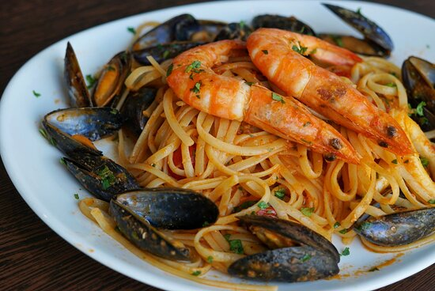

Seafood Pasta

A mediterranean dish
Seafood pasta is a must-try for anyone visiting italy, it can be found in any of the tourist-heavy italian cities.
However it's best enjoyed at Mediterranean coastal towns like Santa Margherita and the villages of Cinque terre.
Ingredients
- 300g linguine or spaghetti
- 200g mixed seafood
- 2 tbsp olive oil
- 2 cloves garlic
- 1/2 cup cherry tomatoes
- 1/4 cup white wine
- Fresh parsley
- Red chili flakes
- Salt and pepper to taste
Steps
- Boil pasta in salted water until al dente. Reserve 1/2 cup of pasta water.
- Heat olive oil in a pan. Sauté garlic and chili flakes until fragrant.
- Add seafood and cook for 2-3 minutes.
- Pour in white wine and let it reduce slightly.
- Add tomatoes and simmer until they soften.
- Toss the pasta into the sauce, adding reserved pasta water if needed for consistency
- Sprinkle parsley, season with salt and pepper, and serve.
Home